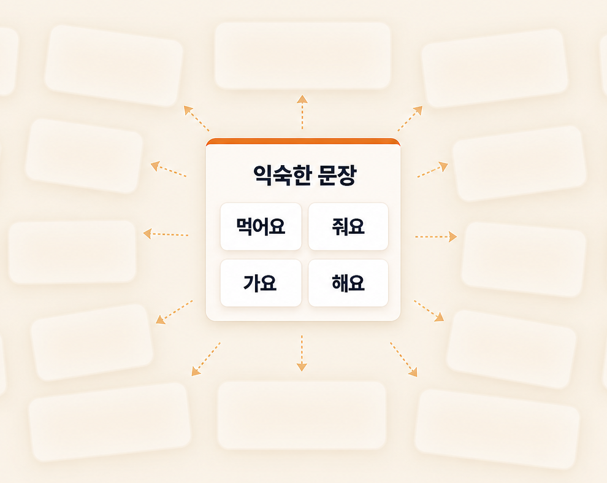
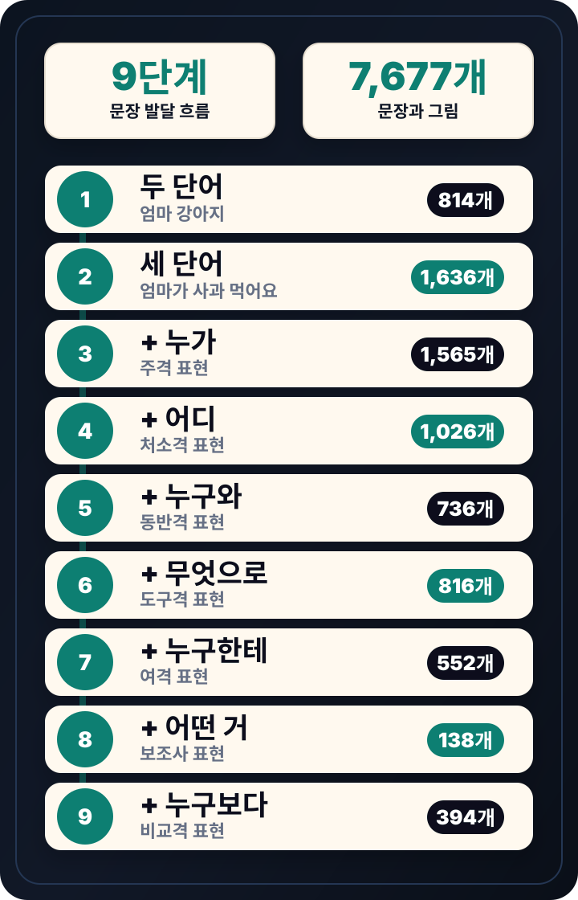

후기 ① — 단어를 고르는 시간이 줄어든 사용자 후기 자리.
오늘도
내일 수업을 위해
책상에 남아 있습니다
아이를 더 나아지게 하고 싶어서 퇴근하고도 자료를 다시 고릅니다.
그림카드는 많은데
오늘 아이에게
먼저 가르칠 단어 순서는
보이지 않습니다

3살 아이와 7살 아이에게
같은 카드를, 같은 순서로
써도 될까요?
그날
한 어머니가 물었습니다

저는 바로 답하지 못했습니다.
그 질문은 15년 동안
제 안에 남았습니다.
문장도
다양하게 가르치고 싶은데
익숙한 문장만 반복됩니다

그 문장들을 매번
선생님이 다 떠올려야 한다면요
15년
치료 경력
12만 명
아이들과의 만남
매번 막히던 수업 준비를 해결하는 프로그램
언어치료
마스터키
클릭만 하면
단어·문장·활동지·성장 기록을
한 번에 준비합니다.
단어
문장
활동지
성장 기록
연령별 핵심 어휘
1,068개
24~84개월 / 7개 연령대 기준으로 정리했습니다.
단어마다
이유가 보입니다
수업 준비뿐 아니라 부모 상담에서도 설명 근거가 됩니다.
내가 고른 단어로
25종 활동지를
계속 만들 수 있습니다
그림카드, 색칠하기, 같은 그림 찾기, 글씨쓰기 등
다양한 활동지를 만들 수 있습니다.

내가 클릭하는 단어로
무제한으로 만드는
활동지
GIF / 영상 예정
단어 클릭 화면이 들어갈 자리
7,677문장
클릭만으로 뽑으세요

문장 고민 끝!
필요한 문장을
고르기만 하세요
GIF 예정 — 문장 목록 클릭 흐름
선택한 문장이
수업자료로
바로 이어집니다
GIF 예정 — 문장 자료 생성 흐름
비어있던 기록이
채워집니다
상담 때 보여줄 근거가 한 장으로 정리됩니다.
BEFORE
빈 보고서
체크하지 못한 항목들이
그대로 남아 있습니다.
AFTER
채워진 보고서
한 번의 출력으로
상담 자료가 완성됩니다.
감으로 만든
자료가 아닙니다
15년의 치료 경험과 근거 기반 자료를
바탕으로 끊임없이 연구했습니다.
01
표준화 검사
언어검사
표준화 언어검사에서 다루는 기본 어휘 풀을 확인합니다.
02
발달 자료
발달검사
연령별 발달 단계에 맞는 어휘를 매칭합니다.
03
문법 자료
문장 발달 자료
두 단어 표현부터 비교 표현까지 9단계로 정리합니다.
04
임상 15년
현장 판단 기준
실제 수업에서 아이가 받아들인 단어로 한 번 더 보정합니다.
↓
이 근거에서 나온 결과
어휘
1,068개
문장
7,677개
먼저 사용한 선생님들의
후기
한그루클래스 양식으로 정리된 실제 사용 후기.
후기 ② — 활동지 다양성·부모 상담 활용 후기 자리.
후기 ③ — 성장 기록·재구매 의향 후기 자리.
한그루클래스 양식 후기 카드 3~5개가 이 자리에 들어갑니다.
자료 구매,
끝이 있었나요?
또 사고, 또 찾던 자료를
마스터키 하나로 계속 만들어 쓰세요.
기존 어휘 자료
- 그림카드 풀세트 60만 원
- 어휘·문장 워크북 30~40만 원
- 활동지 추가 구매 계속 발생
처음만
약 100만 원+
필요할 때마다
또 사야 합니다.
언어치료 마스터키
- 핵심 어휘 1,068개
- 문장 자료 7,677개
- 25종 활동지 계속 생성
한 번 구매
평생 사용
잃어버릴 걱정도
구길 걱정도 없습니다.
Early bird
얼리버드
얼리버드 · 100명 한정
언어치료 마스터키
490,000원
392,000원
언어치료 마스터키
평생 이용권
한 번 구매하면 계속 만들어 쓰는 수업 준비 프로그램
핵심 어휘
1,068개 문장 자료
7,677개 활동지
25종 성장 기록
포함
1,068개 문장 자료
7,677개 활동지
25종 성장 기록
포함
20%
할인
할인
이런 점이
궁금하신가요?
컴퓨터를 잘 못해도 사용할 수 있나요?
네. 연령을 고르고, 단어를 선택하고, 필요한 자료를 출력하는 방식이라 복잡한 편집 프로그램을 다루지 않아도 됩니다.
태블릿이나 휴대폰에서도 사용할 수 있나요?
네. 컴퓨터, 태블릿, 휴대폰에서 사용할 수 있습니다. 다만 출력 자료를 준비할 때는 컴퓨터 사용이 더 편할 수 있습니다.
부모도 사용할 수 있나요?
네. 치료사 선생님들을 대상으로 만든 프로그램이지만, 부모님도 쉽게 사용할 수 있도록 만들었습니다.
그림카드나 활동지는 바로 출력할 수 있나요?
네. 선택한 단어로 그림카드와 활동지를 만들고 출력해서 수업에 사용할 수 있습니다.
한 번 구매하면 계속 사용할 수 있나요?
네. 한 번 구매하면 계속 사용할 수 있습니다.
오늘 수업 준비
이제 한 번에
끝내세요
언어치료 마스터키로
단어 선택부터 활동지, 문장, 보고서까지
한 번에 준비할 수 있습니다.
얼리버드로 시작하기
선착순 100명 · 20% 할인